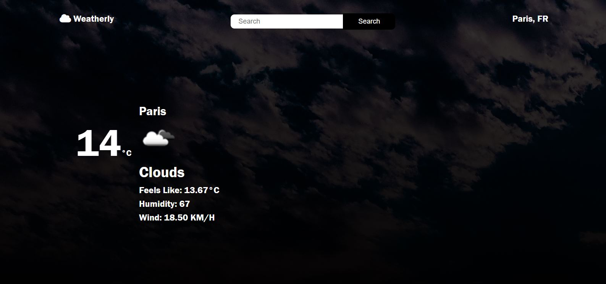

Day 25 was focused on putting together the Weather App, and most of my efforts were related to santizing the data provided by the Open Weather API.
Overall, I was surprised by how smooth the process of adding the searchbar and linking it up to the API requests went. I expected to run into some serious issues putting everything together, but fortunately I think the time spent reading through the API documentation really paid off. I also remembered a really useful console method shown to me by Wes Bos in his 30 Days of JS, console.table, which was invaluable for getting an overview of the data coming in - especially since much of it was nested several levels deep within the JSON returned.
Although I have a few ideas for expanding the app, such as adding a 7-day forcast, tying in recommendations of things to-do based on location, as well as inspirational quotes to get further practice with promises and async/await, I am happy with how the app ended up at this point, and am excited to dive headfirst into React. Although I've done a bit of React last summer, and continuously tried to make time to get into it over the past few months, I always found that my time was too limited to really get into it, which is sad since it seems to be the main in-demand skill for jobs I am looking at as a front-end or full-stack developer (aside from straight-up JS). I feel like I've built a pretty solid momentum over the past 25 days. I need to go back and figure out the hosting for my past few projects using webpack so I can add them to this portfolio, and also have a few ideas to polish many of them up. I am excited to see what another 25 days does for my confidence, portfolio, and job search. Onwards and upwards!
Here is an image of the completed weather app:
